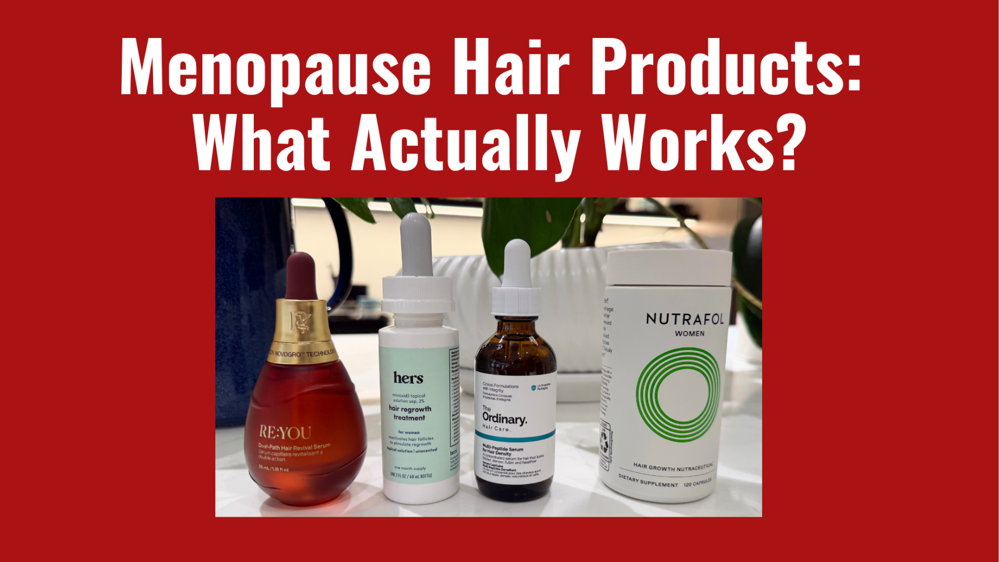
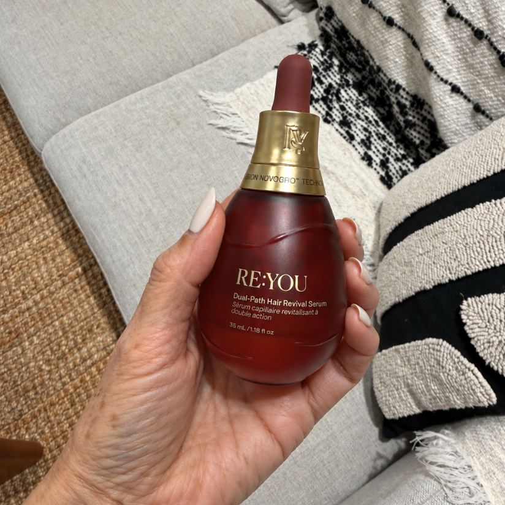
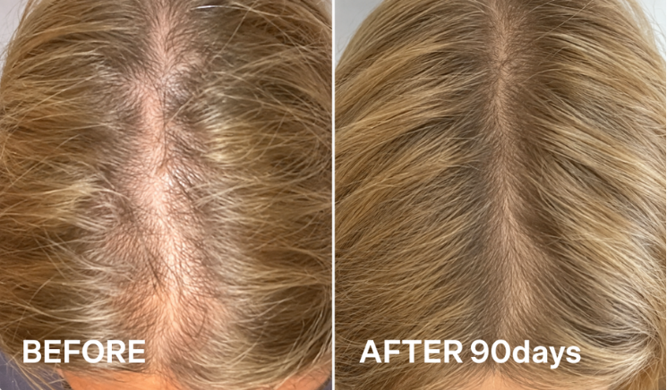
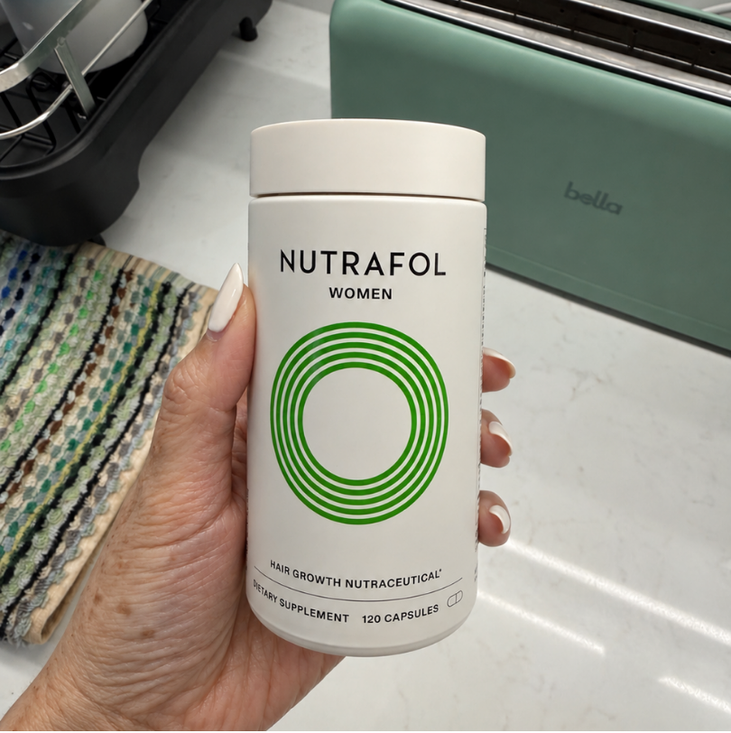
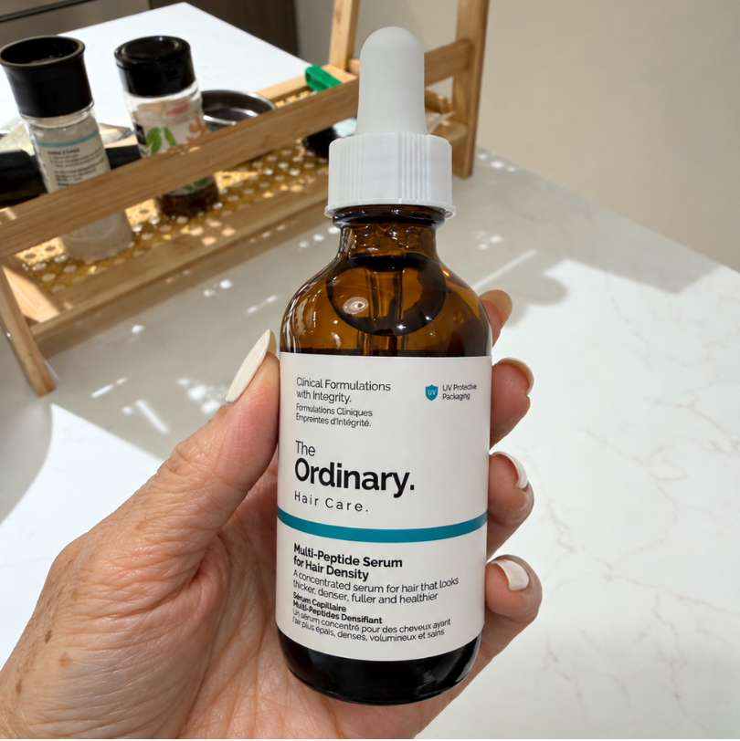
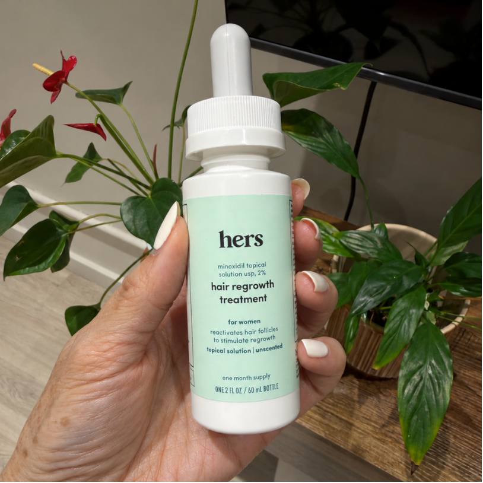

I first noticed my hair changing during perimenopause. My ponytail felt smaller, my part looked wider, and I was finding more hair in the shower. It started affecting my confidence too.
I initially blamed stress and aging. But I learned menopause hair thinning is more complicated than that. Hormonal changes, stress and nutrition can all play a role, while the follicles themselves can become less active and the scalp environment less supportive of healthy growth.
That changed how I looked at hair products. So I tried 4 popular options for 90 days each, from supplements to serums, to see what actually made a difference. Here’s what I noticed after 90 days with each one, what I liked, what I didn’t, and which one I’d actually keep using.
1. RE:YOU Hair Revival Serum

RE:YOU Hair Revival Serum
Check PriceThis was the biggest surprise for me. RE:YOU is a newer biotech brand, but once I understood what was happening to my hair during menopause, its approach made a lot of sense.
Hormonal changes during menopause can disrupt the natural hair growth cycle, leaving fewer hairs actively growing. RE:YOU’s proprietary NOVOGRO™ technology is designed to support the biology behind healthy hair growth. NOVOGRO™ 623 and 624 support the health of the follicle itself, while NOVOGRO™ 273 supports the environment around it.
It was also tested head to head against minoxidil in a randomized, double-blind study with 190 women and showed greater improvement on several measures, including hair density and shedding.
RE:YOU is also drug-free and hormone-free, which made me much more comfortable using it every day.
- Proprietary NOVOGRO™ Technology
- Dual pathway support inside and around the follicle
- Showed greater improvement than minoxidil on 190-participant clinical trial
- Developed by Harvard scientists
- Lightweight, water-based formula
- Drug-free and hormone-free
- Visible results in 90 days
- 90 day money back guarantee
- Only available online
- Higher price than some alternatives
- 6 month clinical results are still underway
What I Found: This was my clear winner. Going through menopause, I was already dealing with enough hormonal changes, so I was hesitant to use anything that could interfere with my hormones. Knowing RE:YOU is hormone free made me feel much more comfortable. I started noticing tiny baby hairs around the 30 day mark, and by 90 days, my part looked noticeably fuller. For the first time in a while, I stopped obsessively checking my hair in the mirror and started feeling like myself again.

2. Nutrafol Women’s Balance

Nutrafol Women’s Balance
Check PriceNutrafol caught my attention because Women’s Balance is specifically designed for women 45+ going through hormonal changes. It takes an inside-out approach with ingredients focused on stress, hormones, and nutrition, which sounded promising for menopause.
My hesitation was that supplements have to be absorbed and work systemically, and the impact of added nutrients can depend on whether nutritional gaps are actually contributing to your thinning in the first place. I also found four capsules a day hard to stay consistent with, and after 90 days, I wasn’t sure I was seeing enough of a visible difference to justify the routine.
- Specifically formulated for women 45+
- Includes ingredients for stress and nutritional support
- Takes an inside-out approach
- 4 large capsules can be difficult to stick with long term
- Results can take up to 6 months
- Some users report nausea or stomach pain
- Bloating, cramping and indigestion are also reported
- Mixed results for noticeable regrowth
What I Found: After 90 days, I noticed a little less shedding, but not much visible change in my part or overall fullness. Four large capsules every day were already hard to stick with, and I had three episodes of stomach pain while taking them. I cannot say for sure Nutrafol caused it, but it made me hesitant to keep going. After three months, I was hoping the results would make the daily commitment feel more worthwhile.
3. The Ordinary Multi-Peptide Serum for Hair Density

Multi Peptide Serum for Hair Density
Check PriceAt $24, this felt like an easy place to start. I liked the lightweight formula and the mix of peptides and caffeine, but these are also familiar ingredients found across many hair serums, offering more general support for the scalp and follicles rather than targeting the hair-cycle changes associated with menopause.
After using it consistently, I did not see much change in my thinning or widening part. I also started noticing some scalp itchiness, which made daily use less appealing. For menopause thinning, it ultimately felt more like general hair support than the targeted solution I was looking for.
- Very affordable at $24
- Lightweight and easy to use
- Contains peptides and caffeine
- Not specifically formulated for menopause related thinning
- Limited clinical evidence on the finished formula itself
- Mixed results for noticeable regrowth
- Some users report an itchy or irritated scalp
- Can cause dryness or flaking for some scalps
What I Found: After 90 days, I was disappointed that my part still looked just as thin and I did not see the regrowth I was hoping for. I also started experiencing occasional scalp itching. For mild thinning, I could see the appeal, but for the changes I was seeing during menopause, I needed more.
4. HERS 2% Minoxidil Solution for Hair Regrowth

HERS 2% Minoxidil Solution for Hair Regrowth
Check PriceI almost skipped minoxidil because I was nervous about starting a drug treatment, but it has decades of evidence behind it and is one of the most established options for hair thinning. At around $18, it was also much cheaper than everything else I tried.
The downside became more obvious once I started using it. It requires twice daily application, and I experienced increased shedding early on, which was stressful when I was already worried about losing more hair. Scalp itching and irritation are also recognized side effects of minoxidil.
- Decades of clinical evidence
- FDA approved active for hair regrowth
- Affordable and widely available
- Drug based treatment
- Initial shedding can occur
- Can cause scalp itching, dryness or irritation
- Unwanted facial hair growth can occur
- Some people experience changes in hair texture or color
- Requires twice daily application
- Can make hair feel greasy
- Results may take 4 months or longer
What I Found: After 90 days, I was disappointed that my part still looked just as thin and I did not see the regrowth I was hoping for. I also started experiencing occasional scalp itching. For mild thinning, I could see the appeal, but for the changes I was seeing during menopause, I needed more.
My Final Take
After trying all four for 90 days, RE:YOU was the clear standout for me. The Ordinary felt too general, Nutrafol was difficult to stick with, and minoxidil came with tradeoffs I was not comfortable committing to long term.
RE:YOU was different. I started seeing baby hairs around 30 days, and by 90 days, my part looked noticeably fuller. I also loved that it was drug free and hormone free, especially during menopause when I was already cautious about anything that could interfere with my hormones.
It was the only one that gave me the results I wanted without making the routine feel like another compromise. After 90 days, it was an easy decision: RE:YOU is the one I’m sticking with.